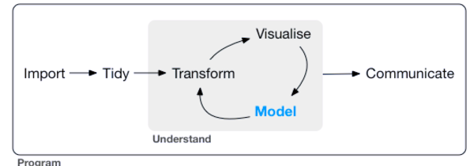

install.packages("tidyverse")NB: The Tidyverse and Tibbles
Programming for Data Science
This notebook is based on Wikham and Grolemund 2017.
The Tidyverse
Tidyverse is a collection of essential R packages for data science.
The packages included in the Tidyverse are designed to support the pipeline of activities associated with data science, such as filtering, transforming, visualizing, etc.

Tidyverse was created by Hadley Wickham and his team with the aim of providing all these utilities to clean and work with data.
Here’s a graphic of the packages associated with the Tidyverse:

Core Libraries
Of these libraries, three fundamental one are the following:
dplyr: Provides a way to process data frames in an expressive way.ggplot2: Provides a way to visualize data in an expressive way.tibble: Provides a foundational data structure for use by other libraries in the Tidyverse.
We’ll cover tibbles in this notebook and the other two in following notebooks.
Tidy Data
Note that the word “tidy” in Tidyverse stands for a specific way to structure data in data frames.
Tidy data frames have the following qualities:
Each variable forms a column.
Each observation forms a row.
Each type of observational unit forms a table.
Using the Tidyverse
To use the Tidyverse, we often import everything:
library(tidyverse)── Attaching core tidyverse packages ──────────────────────── tidyverse 2.0.0 ──
✔ dplyr 1.1.3 ✔ readr 2.1.4
✔ forcats 1.0.0 ✔ stringr 1.5.0
✔ ggplot2 3.4.4 ✔ tibble 3.2.1
✔ lubridate 1.9.3 ✔ tidyr 1.3.0
✔ purrr 1.0.2
── Conflicts ────────────────────────────────────────── tidyverse_conflicts() ──
✖ dplyr::filter() masks stats::filter()
✖ dplyr::lag() masks stats::lag()
ℹ Use the conflicted package (<http://conflicted.r-lib.org/>) to force all conflicts to become errorsPiping with %>%
Just a quick note about this odd looking operator that you will start to see.
One of the key elements of the Tidyverse is the use of piping.
Piping is the ability of to pass the return values of one function to another, without having to nest functions.
For example, instead of something like this:
a <- "Hello"
b <- "World"
var1 <- c(a, b)
var2 <- paste(var1)
print(var2)[1] "Hello" "World"Or this:
print(paste(c(a,b)))[1] "Hello" "World"We can do:
c(a, b) %>%
paste() %>%
print()[1] "Hello" "World"You can see that although this pattern is longer than the preceding, it is easier to read and write.
The pipe operator %>% is similar to the pipe operator | in Unix shells.
more foo.txt | grep barPiping is also similar to method chaining in Python, but is more pervasive.
In Python you can chain individual objects that return themselves (as it were).
For example, we chain four operations below:
df.value_counts('foo').to_frame('n').fillna(0).TIn the Tidyverse, you pipe together any two functions so long as it makes sense that the output of one function is the input of another.
By default, the output of one function becomes the first argument of the function following the %>%.
If not use the . placeholder variable to tell pipe operator where to put the data.
For example, here we want the data frame to be the second argument of the lm() function:
my_data_frame %>%
lm(y ~ x, .)By the way, the operator comes with the magrittr package, which is a central part of the Tidyverse. It is so central, in fact, that packages in the tidyverse load %>% automatically.
Tibbles
Dplyr can work with different rectangular data structures:
- Plain old data frames
- Tibbles
- Data.tables (see data.table)
The foundational data structure of the Tidyverse is the tibble.
Tibbles are data frames, but they tweak some older behaviors to make your life a little easier.
Creating tibbles
If you need to make a tibble “by hand”, you can use tibble() or tribble().
tibble() works by assembling individual vectors, a column-wise operation:
x <- c(1, 2, 5)
y <- c("a", "b", "h")
tibble(x, y)| x | y |
|---|---|
| <dbl> | <chr> |
| 1 | a |
| 2 | b |
| 5 | h |
You can also name the inputs, provide data inline with c(), and perform computation:
tibble(
x1 = x,
x2 = c(10, 15, 25),
y = sqrt(x1^2 + x2^2)
)| x1 | x2 | y |
|---|---|---|
| <dbl> | <dbl> | <dbl> |
| 1 | 10 | 10.04988 |
| 2 | 15 | 15.13275 |
| 5 | 25 | 25.49510 |
Every column in a data frame or tibble must be the same length. If they are not, you will get an error:
tibble(
x = c(1, 5),
y = c("a", "b", "c")
)Error in `tibble()`: ! Tibble columns must have compatible sizes. • Size 2: Existing data. • Size 3: Column `y`. ℹ Only values of size one are recycled.
As the error message says, “Only values of size one are recycled.”
So this will work:
tibble(
x = 1:5,
y = "a",
z = TRUE
)| x | y | z |
|---|---|---|
| <int> | <chr> | <lgl> |
| 1 | a | TRUE |
| 2 | a | TRUE |
| 3 | a | TRUE |
| 4 | a | TRUE |
| 5 | a | TRUE |
Tribbles
Another way to create a tibble is with tribble(), which short for transposed tibble.
tribble() is customized for entering data directly in code, where row-wise entries are more natural.
Column headings start with ~.
Entries are separated by commas.
This makes it possible to lay out small amounts of data in an easy to read form:
tribble(
~x, ~y, ~z,
"a", 2, 3.6,
"b", 1, 8.5
)| x | y | z |
|---|---|---|
| <chr> | <dbl> | <dbl> |
| a | 2 | 3.6 |
| b | 1 | 8.5 |
Finally, if you have a regular data frame you can turn it into to a tibble with as_tibble():
as_tibble(mtcars) %>% head()| mpg | cyl | disp | hp | drat | wt | qsec | vs | am | gear | carb |
|---|---|---|---|---|---|---|---|---|---|---|
| <dbl> | <dbl> | <dbl> | <dbl> | <dbl> | <dbl> | <dbl> | <dbl> | <dbl> | <dbl> | <dbl> |
| 21.0 | 6 | 160 | 110 | 3.90 | 2.620 | 16.46 | 0 | 1 | 4 | 4 |
| 21.0 | 6 | 160 | 110 | 3.90 | 2.875 | 17.02 | 0 | 1 | 4 | 4 |
| 22.8 | 4 | 108 | 93 | 3.85 | 2.320 | 18.61 | 1 | 1 | 4 | 1 |
| 21.4 | 6 | 258 | 110 | 3.08 | 3.215 | 19.44 | 1 | 0 | 3 | 1 |
| 18.7 | 8 | 360 | 175 | 3.15 | 3.440 | 17.02 | 0 | 0 | 3 | 2 |
| 18.1 | 6 | 225 | 105 | 2.76 | 3.460 | 20.22 | 1 | 0 | 3 | 1 |
The inverse of as_tibble() is as.data.frame().
It converts a tibble back into a regular data.frame.
Non-syntactic names
It’s possible for a tibble to have column names that are not valid R variable names, names that are non-syntactic.
For example, the variables might not start with a letter or they might contain unusual characters like a space.
tb <- tibble(
`:)` = "smile",
` ` = "space",
`2000` = "number"
)tb| :) | 2000 | |
|---|---|---|
| <chr> | <chr> | <chr> |
| smile | space | number |
Note that to refer to these variables, you need to surround them with backticks, `:
You’ll also need the backticks when working with these variables in other packages, like ggplot2, dplyr, and tidyr.
Tibbles vs. Data Frames
There are two main areas in the usage of a tibble vs. a classic data frame where the two differ in behavior:
printing and subsetting.
If these differences cause problems when working with older packages, you can turn a tibble back to a regular data frame with as.data.frame().
Printing
The print method will print only the first 10 rows and the columns that fit on screen.
This makes it much easier to work with large data.
my_trib <- tibble(
a = lubridate::now() + runif(1e3) * 86400,
b = lubridate::today() + runif(1e3) * 30,
c = 1:1e3,
d = runif(1e3),
e = sample(letters, 1e3, replace = TRUE)
)print(my_trib)# A tibble: 1,000 × 5
a b c d e
<dttm> <date> <int> <dbl> <chr>
1 2024-09-27 11:55:17 2024-10-01 1 0.299 k
2 2024-09-28 09:32:40 2024-10-06 2 0.247 k
3 2024-09-27 13:15:14 2024-10-08 3 0.456 b
4 2024-09-28 04:51:21 2024-10-21 4 0.357 e
5 2024-09-28 10:08:21 2024-10-13 5 0.150 q
6 2024-09-28 01:33:43 2024-09-29 6 0.565 r
7 2024-09-27 21:58:04 2024-10-19 7 0.0905 y
8 2024-09-28 05:03:11 2024-10-02 8 0.912 f
9 2024-09-28 10:27:03 2024-10-13 9 0.169 z
10 2024-09-28 03:24:24 2024-09-30 10 0.338 u
# ℹ 990 more rowsWhere possible, tibbles also use color to draw your eye to important differences.
One of the most important distinctions is between the string "NA" and the missing value, NA:
print(tibble(x = c("NA", NA)))# A tibble: 2 × 1
x
<chr>
1 NA
2 NA Tibbles are designed to avoid overwhelming your console when you print large data frames.
But sometimes you need more output than the default display.
There are a few options that can help.
First, you can explicitly print() the data frame and control the number of rows (n) and the width of the display. width = Inf will display all columns:
# install.packages("nycflights13")library(nycflights13)flights %>% print(n = 10, width = Inf)# A tibble: 336,776 × 19
year month day dep_time sched_dep_time dep_delay arr_time sched_arr_time
<int> <int> <int> <int> <int> <dbl> <int> <int>
1 2013 1 1 517 515 2 830 819
2 2013 1 1 533 529 4 850 830
3 2013 1 1 542 540 2 923 850
4 2013 1 1 544 545 -1 1004 1022
5 2013 1 1 554 600 -6 812 837
6 2013 1 1 554 558 -4 740 728
7 2013 1 1 555 600 -5 913 854
8 2013 1 1 557 600 -3 709 723
9 2013 1 1 557 600 -3 838 846
10 2013 1 1 558 600 -2 753 745
arr_delay carrier flight tailnum origin dest air_time distance hour minute
<dbl> <chr> <int> <chr> <chr> <chr> <dbl> <dbl> <dbl> <dbl>
1 11 UA 1545 N14228 EWR IAH 227 1400 5 15
2 20 UA 1714 N24211 LGA IAH 227 1416 5 29
3 33 AA 1141 N619AA JFK MIA 160 1089 5 40
4 -18 B6 725 N804JB JFK BQN 183 1576 5 45
5 -25 DL 461 N668DN LGA ATL 116 762 6 0
6 12 UA 1696 N39463 EWR ORD 150 719 5 58
7 19 B6 507 N516JB EWR FLL 158 1065 6 0
8 -14 EV 5708 N829AS LGA IAD 53 229 6 0
9 -8 B6 79 N593JB JFK MCO 140 944 6 0
10 8 AA 301 N3ALAA LGA ORD 138 733 6 0
time_hour
<dttm>
1 2013-01-01 05:00:00
2 2013-01-01 05:00:00
3 2013-01-01 05:00:00
4 2013-01-01 05:00:00
5 2013-01-01 06:00:00
6 2013-01-01 05:00:00
7 2013-01-01 06:00:00
8 2013-01-01 06:00:00
9 2013-01-01 06:00:00
10 2013-01-01 06:00:00
# ℹ 336,766 more rowsYou can also control the default print behavior by setting options:
options(tibble.print_max = n, tibble.print_min = m): if more thannrows, print onlymrows.- Use
options(tibble.print_min = Inf)to always show all rows. - Use
options(tibble.width = Inf)to always print all columns, regardless of the width of the screen.
You can see a complete list of options by looking at the package help with package?tibble.
Using RStudio View()
A final option is to use RStudio’s built-in data viewer to get a scrollable view of the complete dataset. This is also often useful at the end of a long chain of manipulations.
You can open a window with a view to your data by calling View(), like so:
flights %>% View()Here’s what the opened window would looks like:

Extracting variables
So far all the tools you’ve learned have worked with complete data frames.
If you want to pull out a single variable, you can use dplyr::pull():
tb <- tibble(
id = LETTERS[1:5],
x1 = 1:5,
y1 = 6:10
)tb %>% pull(x1) # by name- 1
- 2
- 3
- 4
- 5
tb %>% pull(1) # by position- 'A'
- 'B'
- 'C'
- 'D'
- 'E'
pull() also takes an optional name argument that specifies the column to be used as names for a named vector.
tb %>% pull(x1, name = id) %>% print()A B C D E
1 2 3 4 5 You can also use the base R tools $ and [[.
[[ can extract by name or position.
$ only extracts by name but is a little less typing.
Here we extract by name:
tb$x1- 1
- 2
- 3
- 4
- 5
tb[["x1"]]- 1
- 2
- 3
- 4
- 5
Here we extract by position:
tb[[1]]- 'A'
- 'B'
- 'C'
- 'D'
- 'E'
Compared to a data frame, tibbles are more strict.
They never do partial matching.
Partial matching is when you specify a part of a column name in a selection operation and R returns the column that matches the substring if there is one.
For example, if you have a data frame df with a column called x1 and you do this — df$x — R will return that column, assuming there are no other columns that begin with x.
df <- as.data.frame(tb)df$x- 1
- 2
- 3
- 4
- 5
Nor will data frames generate a warning if the column you are trying to access does not exist.
df$zNULLTibbles don’t do these things.
Instead, they treat both cases as unknown columns and warn the user.
tb$xWarning message:
“Unknown or uninitialised column: `x`.”NULLtb$zWarning message:
“Unknown or uninitialised column: `z`.”NULLFor this reason we sometimes joke that tibbles are lazy and surly.
They do less and complain more :-)
Subsetting
Lastly, there are some important differences when using [.
With traditional data frames, [ sometimes returns a data.frame, and sometimes returns a vector.
This is a common source of bugs.
With tibbles, [ always returns another tibble.
This can sometimes cause problems when working with older code.
If you hit one of those functions, just use as.data.frame() to turn your tibble back to a data.frame.